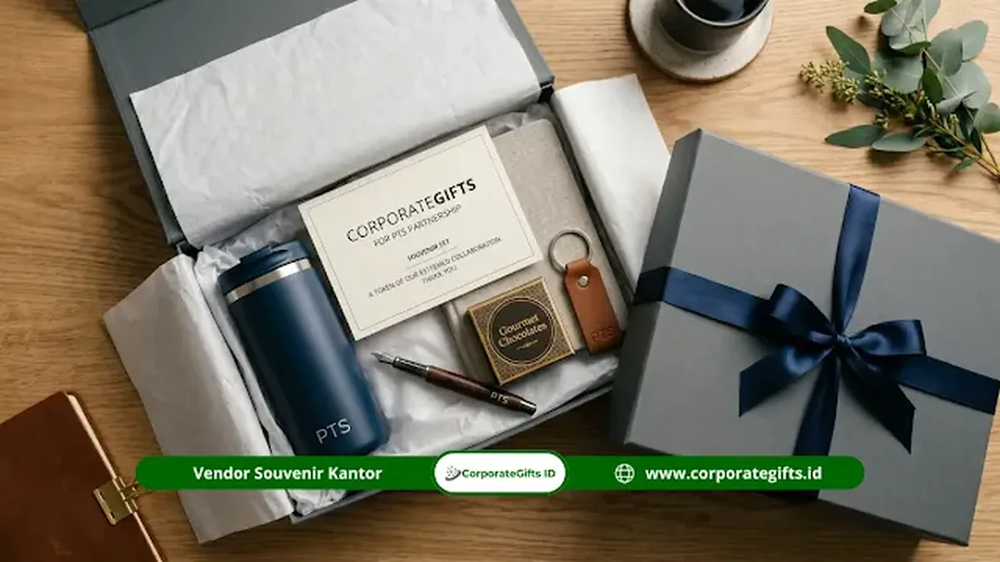

Corporate Gifts ID - Souvenir mitra kampus swasta adalah cinderamata resmi yang diserahkan sebagai bentuk penghargaan dalam kerja sama strategis antara perusahaan swasta, BUMN, asosiasi industri, atau NGO dengan perguruan tinggi swasta (PTS) di Indonesia. Cinderamata ini menjadi jembatan visual yang mempererat sinergi akademik-industri (link and match) pada momentum penandatanganan Memorandum of Understanding (MoU), kuliah dosen tamu, hingga program magang mahasiswa.
Berdasarkan data Asosiasi Perguruan Tinggi Swasta Indonesia (APTISI), terdapat lebih dari 3.500 institusi PTS aktif di seluruh Indonesia. Berbeda dengan institusi negeri yang terikat aturan birokrasi anggaran kaku, kerja sama dengan kampus swasta memberikan ruang eksplorasi desain yang jauh lebih dinamis, pemilihan warna yang trendi, serta fleksibilitas teknik personalisasi cinderamata dual-branding.
Poin Kunci Pengadaan Souvenir Mitra Kampus Swasta:
- Fleksibilitas Brand Guidelines: Kampus swasta lebih terbuka terhadap kombinasi palet warna modern yang selaras dengan identitas visual mitra industri.
- Penerapan Dual-Branding Harmonis: Menampilkan logo universitas dan logo perusahaan secara berdampingan dengan proporsi visual seimbang.
- Alur Birokrasi Cepat: Proses approval desain dan penerbitan Purchase Order (PO) berlangsung lebih singkat tanpa hambatan tender regulasi negara.
- Fokus pada Nilai Guna Modern: Sangat mengapresiasi item berwawasan ramah lingkungan (eco-friendly) serta gadget inovatif yang mendukung gaya hidup digital kampus.
Karakteristik Khas Souvenir Mitra Kampus Swasta
Perguruan tinggi swasta di Indonesia memiliki latar belakang dan spesialisasi yang beragam, mulai dari universitas berbasis teknologi, sekolah tinggi bisnis, institut seni desain, hingga kampus keagamaan. Keberagaman ini membentuk karakteristik souvenir yang unik:
- Ruang Eksplorasi Visual yang Luas: Mitra industri bebas memadukan grafis modern, tipografi segar, dan kutipan inspiratif di samping logo institusi.
- Kecepatan Pengambilan Keputusan: Jalur persetujuan rektorat atau yayasan kampus swasta biasanya lebih ringkas dibanding institusi birokrasi pemerintahan.
- Disesuaikan dengan Nilai Filosofis Kampus: Cinderamata dapat dikurasi secara tematik sesuai fokus akademik, misalnya gift set berbahan ramah lingkungan untuk kampus berwawasan green campus.
- Ketiadaan Regulasi Pagu Pemerintah yang Kaku: Memberikan kebebasan bagi divisi CSR atau People and Culture perusahaan untuk menentukan pagu anggaran gift set berkualitas tinggi.

Penyusunan paket gift set kemitraan kampus dengan kombinasi tumbler vacuum, notebook kulit deboss, dan pulpen metal.
5 Pilihan Produk Souvenir Terbaik untuk Kemitraan Kampus Swasta
Berikut rekomendasi produk unggulan dari katalog souvenir kantor dan merchandise yang terbukti paling diminati oleh pimpinan perguruan tinggi swasta:
1. Notebook Agenda Kulit Custom (Hardcover PU Leather)
Buku catatan bercover kulit sintetis premium dengan teknik deboss logo kampus dan perusahaan di bagian sampul depan. Menghadirkan kesan formal yang fungsional bagi dekan, kaprodi, dan pimpinan fakultas.
2. Tumbler Stainless Steel Vacuum Ganda (SUS 304)
Tumbler stainless custom logo berdaya tahan panas/dingin hingga 18 jam dengan grafir laser dual-logo. Mendukung kampanye pengurangan sampah plastik sekali pakai di lingkungan kampus.
3. Tote Bag Kanvas Tebal Eksklusif
Tas kanvas blacu premium atau kanvas katun tebal dengan sablon digital presisi. Sangat digemari oleh dosen muda dan civitas akademika karena praktis membawa laptop dan berkas riset.
4. Paket Gift Set Hardbox Magnetik (Corporate Box Set)
Paket gift set eksklusif berisi kombinasi tumbler, notebook kulit, dan pulpen metal yang dikemas dalam kotak rigid magnetik dengan lapisan busa EVA die-cut presisi. Pilihan utama untuk seremoni penandatanganan kerja sama (MoU Signing).
5. Smart Gadget & Wireless Charging Desk Mat
Sangat tepat bagi kampus swasta berorientasi teknologi atau sekolah bisnis modern, seperti powerbank kapasitas besar berbalut kulit atau alas meja kerja berkemampuan wireless charger.
7 Langkah Taktis Alur Pemesanan Souvenir Kampus Swasta
Untuk memastikan cinderamata kemitraan selesai tepat waktu sebelum seremoni akademik dimulai, ikuti 7 alur pemesanan terstruktur berikut:
- Konsultasi Awal & Pagu Anggaran: Diskusikan jumlah kebutuhan, profil tamu undangan, dan tanggal deadline acara bersama konsultan kami.
- Penyerahan File Vektor Logo: Sediakan file master logo kampus dan perusahaan dalam format vektor resolusi tinggi (AI, EPS, atau PDF Vector) agar hasil cetak tajam.
- Penyusunan Desain Mockup 3D Digital: Tim desainer menyiapkan preview tata letak dual-branding untuk disetujui bersama oleh pihak kampus dan korporasi.
- Konfirmasi Purchase Order (PO) & Uang Muka (DP): Pembayaran uang muka sebesar 50% untuk mengamankan slot antrean produksi bahan baku.
- Tahap Proofing Sampel Fisik (Opsional Pesanan Besar): Pembuatan 1 unit sampel fisik nyata guna memvalidasi ketepatan warna dan kerapian grafir sebelum produksi massal.
- Proses Produksi Massal & QC Ketat: Produksi berjalan selama 7 hingga 21 hari kerja dengan pengecekan fungsi pada setiap unit produk.
- Pengiriman Logistik & Serah Terima: Cinderamata dikirimkan langsung ke gedung rektorat atau venue acara lengkap dengan invoice B2B resmi dan surat jalan.
Tabel Matriks Rekomendasi Souvenir Kemitraan PTS 2026
Berikut matriks perbandingan paket cinderamata mitra kampus swasta untuk mempermudah penyusunan anggaran:
| Kategori Acara | Estimasi Biaya per Set | Rekomendasi Paket Item | Tipe Personalisasi | Penerima Utama |
|---|---|---|---|---|
| Kuliah Tamu / Workshop | Rp75.000 - Rp125.000 | Tote Bag Kanvas + Notebook + Pulpen Metal | Sablon Digital & Grafir Laser | Dosen Pendamping & Peserta Terpilih |
| Kunjungan Industri / Benchmarking | Rp125.000 - Rp250.000 | Tumbler SUS 304 + Notebook Kulit Hardcover | Dual-Logo Laser Engraving + Deboss | Kaprodi, Dekan & Kepala Laboratorium |
| Seremoni MoU / Rapat Senat VIP | Rp250.000 - Rp500.000 | Executive Gift Set Hardbox + Wireless Charger | Gold Foil Stamping + Velvet Cushion | Rektor, Wakil Rektor & Ketua Yayasan |
| Penghargaan Dosen Peneliti Berprestasi | > Rp500.000 | Plakat Kristal Optik 3D + Smart Gadget Eksklusif | 3D Subsurface Laser Engraving | Penerima Hibah Riset Industri |
Keunggulan Bekerja Sama dengan Vendor Spesialis Souvenir Kampus
Mengelola proyek cinderamata akademik membutuhkan keahlian khusus yang tidak dimiliki oleh percetakan umum. Bekerja sama dengan penyedia spesialis seperti CorporateGifts.ID memberikan sejumlah keuntungan:
- Keahlian Harmonisasi Dual-Branding: Mampu menata dua logo yang berbeda karakter visual agar tampil proporsional tanpa saling mendominasi.
- Disiplin Tenggat Waktu Acara Formal: Kami memahami bahwa jadwal seremoni akademik tidak dapat ditunda, sehingga ketepatan jadwal produksi menjadi prioritas mutlak.
- Dukungan Administrasi B2B Lengkap: Menyediakan surat penawaran harga resmi (RAB), faktur pajak elektronik (e-Faktur), kuitansi bermaterai, dan Berita Acara Serah Terima (BAST).
- Jaminan Kualitas Produk (Warranty): Penggantian unit rusak secara cepat sebelum hari H penyerahan cenderamata.
Pertanyaan Seputar Souvenir Mitra Kampus Swasta (FAQ)
Kesimpulan dan Konsultasi Pengadaan di CorporateGifts.ID
Mengalokasikan souvenir yang tepat bagi mitra kampus swasta bukan sekadar bentuk keramahan seremonial, melainkan investasi strategis dalam membangun reputasi kelembagaan jangka panjang. Melalui pemilihan produk yang berkualitas, harmonisasi tata letak dua logo, dan kemasan boks eksklusif, cenderamata Anda akan menjadi simbol kolaborasi yang berkesan bagi seluruh civitas akademika.
Rencanakan souvenir kemitraan perguruan tinggi swasta Anda bersama CorporateGifts.ID. Temukan puluhan pilihan produk siap custom di katalog produk resmi kami atau ajukan estimasi penawaran harga resmi (RAB) melalui formulir permintaan penawaran sekarang juga.
Disclaimer: Pilihan produk, variasi kemasan hardbox, dan estimasi biaya per set dapat disesuaikan secara fleksibel dengan pagu anggaran institusi kampus atau perusahaan Anda melalui tim konsultan CorporateGifts.ID.